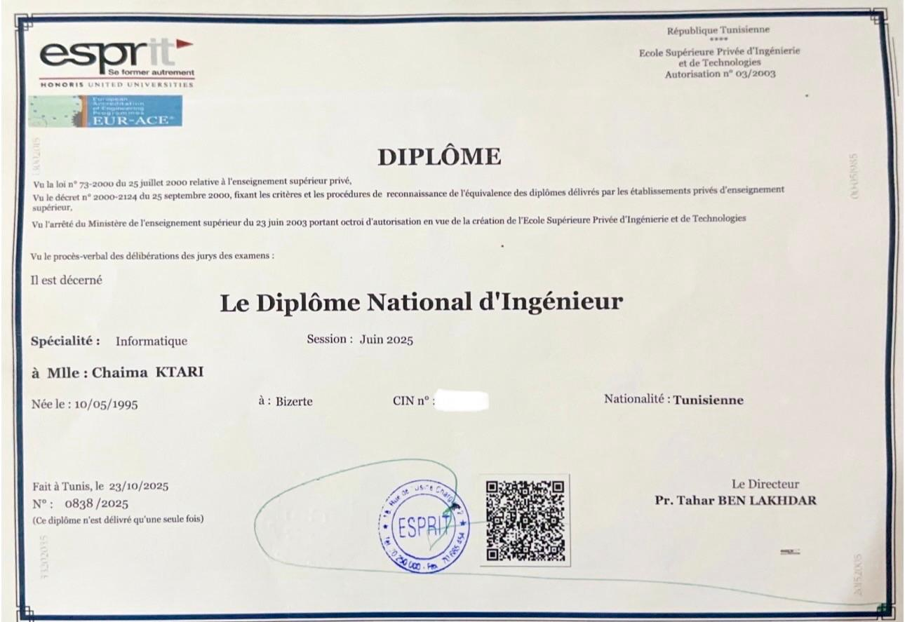
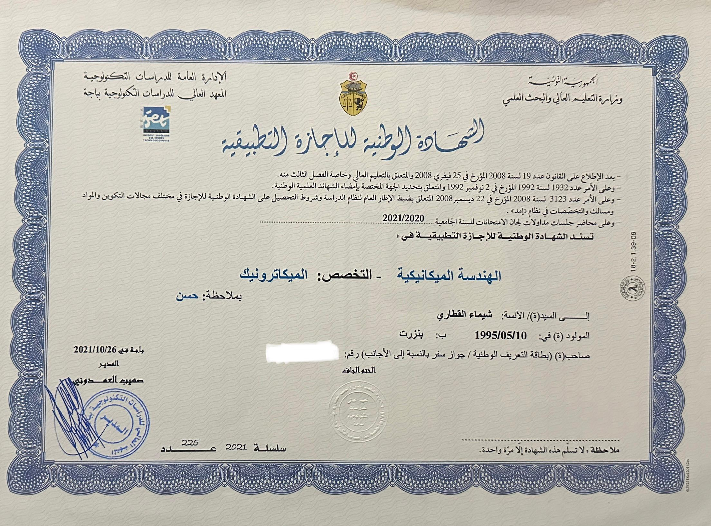
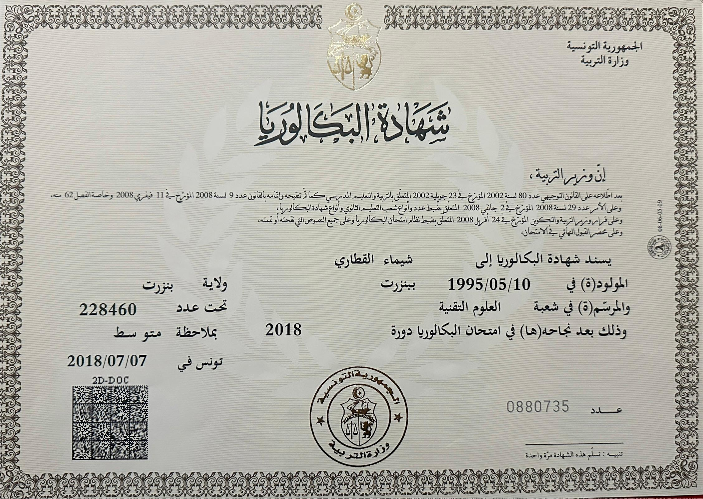

Bonjour, je suis Chaima KTARI
Ingénieure Informaique (Développeuse FullStack Web / Passionnée d'IA)
Contactez-moiÀ propos de moi
Je suis une jeune ingénieure informatique récemment diplômée et passionnée par les technologies, j'ai acquis une expérience professionnelle diversifiée à travers plusieurs stages en entreprise. Mon parcours allie une formation académique solide à une pratique concrète du développement dans des environnements variés.
Je communique facilement en français et en anglais, ce qui me permet de travailler efficacement dans des contextes internationaux. Dotée d'une grande curiosité intellectuelle, j'aime apprendre en continu et m'adapter aux nouvelles technologies. Mon expérience en travail d'équipe, renforcée par mon engagement associatif, m'a enseigné l'importance de la collaboration et de l'écoute pour mener des projets à succès.
Aujourd'hui, je souhaite intégrer une équipe dynamique afin de contribuer à des projets innovants tout en poursuivant le développement de mes compétences au sein d'un environnement stimulant et bienveillant.
Expérience Professionnelle
Développeuse Full Stack .NET (ASP.NET Core)
AsteelFlash, Tunis, Tunisie
Principales Réalisations
- Conception et développement d'une application Full Stack en .NET, avec gestion des flux de données et des règles métier.
- Mise en place d'un système d'import automatisé de données depuis des fichiers Excel, avec intégration directe en base afin d'éliminer la saisie manuelle et réduire les erreurs.
- Développement d'interfaces utilisateur web en HTML, CSS et JavaScript.
- Implémentation de processus automatisés en Python pour garantir l'intégrité et la conformité des données.
- Développement d'un système automatisé de scan des bobines, validant les références par prototype à partir de fichiers Excel et intégrant uniquement les données conformes.
- Analyse des données et visualisation des indicateurs clés (KPI) avec Power BI pour le suivi des performances, la détection d'anomalies et l'aide à la décision.
- Travail en environnement Agile SCRUM, avec collaboration étroite avec les équipes métier (user stories, sprints, réunions).
- Gestion de la persistance des données via Entity Framework Core sur une base SQL Server.
- Intégration d'un assistant intelligent basé sur un LLM (Ollama) pour répondre aux problématiques liées à la production et à la qualité.
Développeuse Web FullStack Java(Spring Boot)/React
Talan Tunis, Tunisie
Principales Réalisations
- Analyse des besoins métiers, conception et développement d'une application web full-stack pour la gestion des absences et congés des employés.
- Développement d'API REST en Java (Spring Boot) et intégration avec le front-end Angular.
- Mise en place du suivi GPS en temps réel des animaux avec des données simulées via Express.js et cartes interactives avec Leaflet.
- Intégration de WebSocket pour la messagerie instantanée et des notifications par e-mail.
- Implémentation de fonctionnalités de blockchain pour l'identification des animaux.
- Notifications temps réel via Firebase pour les alertes de zone et de santé.
- Gestion des utilisateurs et de la sécurité de l'application avec Spring Security.
- Accès et persistance des données avec Spring Data JPA sur une base MySQL.
Administrateur système et réseau
Ultim, Tunis, Tunisie
Principales Réalisations
- Installation et configuration de l'ERP Odoo..
- Personnalisation et intégration des modules ERP selon les besoins métier.
- Mise en place d'un Load Balancer afin d'assurer la haute disponibilité du système.
Éducation
Diplôme National d'Ingénieur en Informatique
École Supérieure Privée d'Ingénierie et Technologie (ESPRIT)
Séptembre 2022 - Séptembre 2025
Spécialité: Développement Web, DevOps | Mention: Très Bien | Moyenne : 16.87

Licence National en Mecanique
Institut Supérieur des Etude Technologique de BEJA (ISET)
Séptembre 2018 - Juin 2021
Spécialité:Mecatronique | Mention: Bien | Moyenne : 13.34

Baccalauréat Sciences Techniques
Lycée Bach Hamba
Juin 2018

Compétences
Langages de programmation
Framework de développement Web Frontend
Framework de développement Web Backend
Bases de données
Cloud, DevOps & CI/CD
Administration sytème et réseau
Méthodes Agile
Analyse des données
Tests & Assurance Qualité
Langues
Arabe
Français
Anglais
Projets Académiques
Pipeline CI/CD DevOps avec Jenkins
École Supérieure Privée d'Ingénierie et Technologie (ESPRIT)
Description du projet
Implémentation d'un pipeline CI/CD complet pour une application Spring Boot, automatisant l'intégration, les tests, la sécurité, la conteneurisation et le déploiement avec monitoring en temps réel.
Réalisations Techniques
- Jenkins : Orchestration complète du pipeline CI/CD.
- Git : Gestion de versions et intégration continue.
- JUnit : Tests unitaires automatisés avec rapport de couverture de code.
- SonarQube : Analyse statique de code et métriques de qualité en continu.
- Docker : Conteneurisation de l'application Spring Boot.
- Docker Compose : Orchestration du contenaire Docker.
- Nexus : Gestion centralisée des artefacts et image Docker.
- Prometheus : Collecte et monitoring des métriques applicatives.
- Grafana : Visualisation des dashboards de performance et santé.
- Trivy : Scan de sécurité de l'image Docker.
Projet d'intégration Cloud et développement Web FullStack(Java/Angular)
École Supérieure Privée d'Ingénierie et Technologie (ESPRIT)
Description du projet
Conception d'une application web full-stack ERP offrant une gestion intégrée des entreprises, du personnel et des stocks
Réalisations Techniques
- Développement des API REST côté backend avec Spring Boot et gestion des données avec Spring Data JPA.
- Mise en place de la sécurité et des rôles utilisateurs avec Spring Security.
- Test des API REST avec Postman et réalisation de tests unitaires et d'intégration avec JUnit.
- Développement des interfaces utilisateurs avec Angular, intégration complète avec le backend, création de formulaires, tableaux dynamiques et dashboards.
- Gestion des versions et collaboration avec Git.
- Documentation des API avec Swagger et configuration des environnements.
- Projet réalisé selon la méthode Agile / SCRUM pour planifier, suivre et livrer les fonctionnalités efficacement.
Projet de développemnt Web et Desktop
École Supérieure Privée d'Ingénierie et Technologie (ESPRIT)
Description du projet
Développement d'un application web et desktop pour l'organisation et la getion des courses de voitures.
Réalisations Techniques
- Développemnt de l'application web Symfony 5 avec architecture MVC
- Développemnt de l'application desktop avec JavaFX avec interface moderne
- Synchronisation entre l'application web et desktop
Jenkinsfile
pipeline {
pipeline {
agent any
environment {
DOCKER_IMAGE = 'ktarichaima-g7-coconsult'
IMAGE_TAG = '0.0.5'
}
stages {
stage('Checkout GIT') {
steps {
echo 'Pulling from Git'
git branch: 'feature-chaimaKTARI',
url: 'https://github.com/chaimaktari/5se1-g7-coconsult-backend.git'
}
}
stage('Clean, Build & Test') {
steps {
script {
try {
sh '''
docker run --name mysql-test -e MYSQL_ALLOW_EMPTY_PASSWORD=yes -e MYSQL_DATABASE=Coconsult -p 3306:3306 -d mysql:8
sleep 30 # Attente pour que MySQL soit prêt
mvn clean install # Construction du projet
mvn jacoco:report # Rapport Jacoco
'''
} finally {
sh '''
docker stop mysql-test || true
docker rm mysql-test || true
'''
}
}
}
}
stage('Static Analysis') {
environment {
SONAR_URL = "http://192.168.88.130:9000/"
}
steps {
withCredentials([string(credentialsId: 'sonar-credentials', variable: 'SONAR_TOKEN')]) {
sh '''
mvn sonar:sonar \
-Dsonar.login=${SONAR_TOKEN} \
-Dsonar.host.url=${SONAR_URL} \
-Dsonar.java.binaries=target/classes \
-Dsonar.coverage.jacoco.xmlReportPaths=target/site/jacoco/jacoco.xml
'''
}
}
}
stage('Upload to Nexus') {
steps {
script {
echo "Deploying to Nexus..."
nexusArtifactUploader(
nexusVersion: 'nexus3',
protocol: 'http',
nexusUrl: "192.168.88.130:9001",
groupId: 'com.bezkoder',
artifactId: 'CoConsult',
version: '1.5',
repository: "maven-central-repository",
credentialsId: "nexus-credentials",
artifacts: [
[
artifactId: 'CoConsult',
classifier: '',
file: 'target/CoConsult.jar',
type: 'jar'
]
]
)
echo "Deployment to Nexus completed!"
}
}
}
stage('Build Docker Image') {
steps {
script {
def nexusUrl = "http://192.168.88.130:9001"
def groupId = "com.bezkoder"
def artifactId = "CoConsult"
def version = "1.5"
sh """
docker build -t ${DOCKER_IMAGE}:${IMAGE_TAG} \
--build-arg NEXUS_URL=${nexusUrl} \
--build-arg GROUP_ID=${groupId} \
--build-arg ARTIFACT_ID=${artifactId} \
--build-arg VERSION=${version} .
"""
}
}
}
stage('Push Docker Image') {
environment {
DOCKER_HUB_CREDENTIALS = credentials('docker-hub-credentials')
}
steps {
script {
withCredentials([usernamePassword(credentialsId: 'docker-hub-credentials', usernameVariable: 'DOCKER_USERNAME', passwordVariable: 'DOCKER_PASSWORD')]) {
sh 'echo $DOCKER_PASSWORD | docker login -u $DOCKER_USERNAME --password-stdin'
sh "docker tag ${DOCKER_IMAGE}:${IMAGE_TAG} $DOCKER_USERNAME/${DOCKER_IMAGE}:${IMAGE_TAG}"
sh "docker push $DOCKER_USERNAME/${DOCKER_IMAGE}:${IMAGE_TAG}"
}
}
}
}
stage('Docker Compose Up') {
steps {
script {
sh 'docker compose up -d'
}
}
}
}
post {
success {
script {
slackSend(channel: '#jenkins-msg',
message: "Le build a réussi : ${env.JOB_NAME} #${env.BUILD_NUMBER} ! Image pushed: ${DOCKER_IMAGE}:${IMAGE_TAG} successfully.")
}
mail to: 'chaima.ktari@esprit.tn',
subject: "Succès de Build : ${env.JOB_NAME} [${env.BUILD_NUMBER}]",
body: "Détails : ${env.BUILD_URL}"
}
failure {
script {
slackSend(channel: '#jenkins-msg',
message: "Le build a échoué : ${env.JOB_NAME} #${env.BUILD_NUMBER}.")
}
mail to: 'chaima.ktari@esprit.tn',
subject: "Échec de Build : ${env.JOB_NAME} [${env.BUILD_NUMBER}]",
body: "Détails : ${env.BUILD_URL}"
}
}
}
}Contactez-moi
Téléphone
+216 23 703 180Localisation
Tunis, Tunisie
Disponibilité
Ouverte aux opportunités en développement Full-Stack,DevOps et IA
N'hésitez pas à me contacter par email ou LinkedIn pour discuter de collaborations ou opportunités.